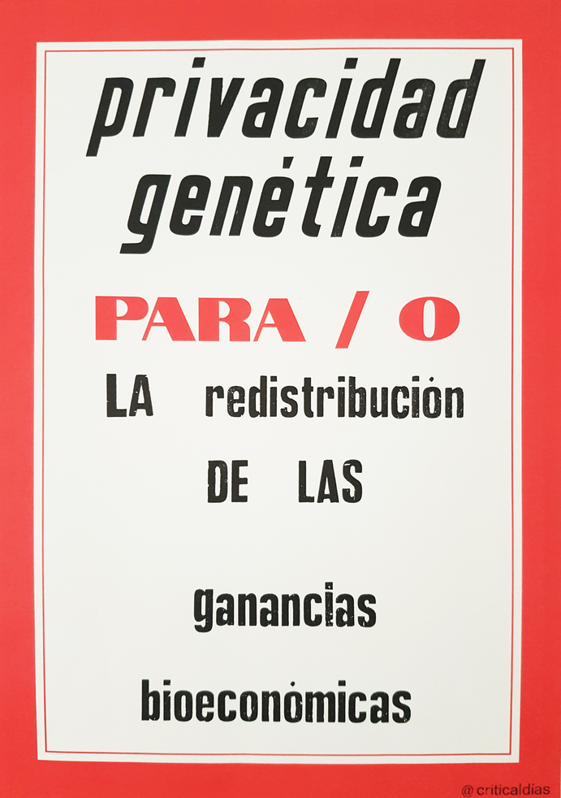

Patrimony of Gestures /
Patrimonio de gestos
'Patrimony of gestures' is a term deriving from the field of archeobotany which refers to the study of past physical and bodily practices via the reading of plant evidence found at archaeological sites, preserved through waterlogging, carbonisation or found imprinted in ceramics. From these 'inscriptions', archeobotanists reconstruct the gestures of people as they worked with and lived on the land.
But what patrimony of gestures will current reproductive practices leave imprinted? And what occurs when the memory of reproductive practices is not protected, or actively erased?
But what patrimony of gestures will current reproductive practices leave imprinted? And what occurs when the memory of reproductive practices is not protected, or actively erased?

Patrimony of Gestures (2018-2022) was a series of exercises in writing, ceramics, performance-reading and listening that consider the idea of ‘reproductive work’ beyond its theorisation as domestic labour, foregrounding myriad forms of communication and political practice, including poetry and art. The project began during an artistic research residency at Casa Velazquez in Madrid in 2018, during which time I collaborated with an archeobotanist.
The Logic of Assistance was the first installation/action, developed as four audio recordings, displayed below scaled down screen grabs from television and films in which queer characters engage with ARTs or fertility clinics. In the audio work I recount the details relating to the institutional, legislative and commercial forces that in the 1990s and early 2000s gave rise to the ART clinic of today. In the audios I mention neither ‘fertility’ nor ‘biological reproduction’, and speak only of ‘the assisted reproduction of the voice’. The quality, rhythm, volume and tone of my voice shifts as I address four different audiences: the public, a class of students, a parent and a lover. I was interested in considering audience as a ‘technology of assisted reproduction’ that inscribes the materiality and surface of the voice.
I was interested in researching assisted reproductive technologies (ARTs) at Casa Velazquez, because it is a French cultural institution located in Spain, and provided an opportunity to think about the different politics of access to ARTs in Europe: while in Spain LGBTQIA+ access to ARTs is funded on the public health system, in France at the time of the exhibition in 2019, it was banned.
I was interested in researching assisted reproductive technologies (ARTs) at Casa Velazquez, because it is a French cultural institution located in Spain, and provided an opportunity to think about the different politics of access to ARTs in Europe: while in Spain LGBTQIA+ access to ARTs is funded on the public health system, in France at the time of the exhibition in 2019, it was banned.


The exercises were documented by a series of poster-publications, each one using a different printing technique (typography, digital, offset and screen printing), produced in collaboration with collectives L'Automatica and Madam_tornado in Barcelona. The six posters were read in a performance-reading (with guests Tamara Al-Mashouk and Alba Juventy) at Hangar Center for Art and Technology, Barcelona, in December, 2019.

